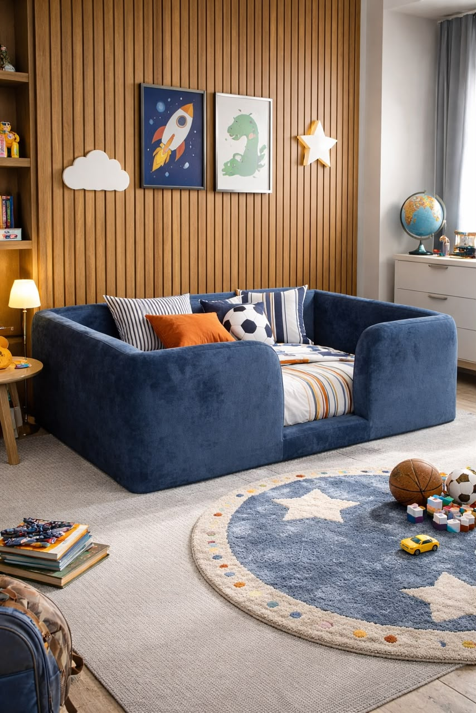

Desenvolvida para unir segurança, conforto e design contemporâneo, a Joca foi o primeiro modelo criado pela Casa da Grife e continua sendo um dos favoritos das famílias.
Solicitar orçamento
A Joca nasceu de uma necessidade real.
Tudo começou quando um amigo do Ton procurou ajuda para encontrar uma cama montessoriana para o filho, que também se chamava Joca. A ideia era criar um espaço que desse mais liberdade para a criança, mas que também oferecesse segurança e conforto.
Naquele momento, surgiu o desafio: como criar uma cama montessoriana diferente das opções tradicionais de madeira?
Foi a partir dessa conversa que o Ton desenvolveu o primeiro projeto da Casa da Grife. A proposta era criar uma cama totalmente estofada, com um design acolhedor e, principalmente, pensada para ser mais segura para a criança.
Assim nasceu a Joca, o primeiro modelo montessoriano desenvolvido pela Casa da Grife.
O que começou para atender uma necessidade de uma família acabou se transformando no início de uma coleção. Hoje, a Joca carrega não apenas um design próprio, mas também a história de como a Casa da Grife começou a desenvolver camas montessorianas com um olhar diferente: unindo segurança, conforto, liberdade e design.